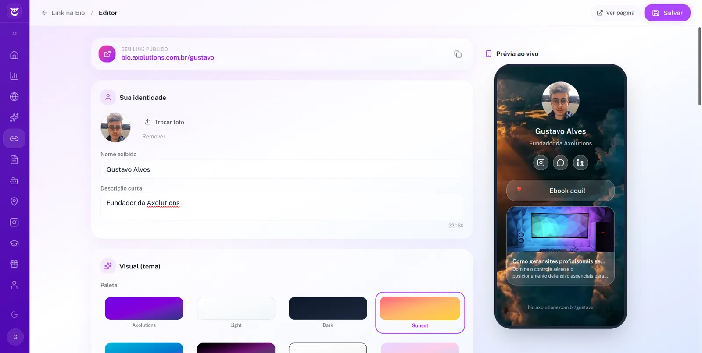

Instagram, TikTok, WhatsApp e tudo que importa num link só, com a cara da sua marca e analytics de cada clique. Pronto em minutos, feito pra transformar seguidor em cliente.

Esta é a sua bio de verdade. O que você vê é o que seu público vê.
Toque numa cor e veja a página trocar de tema na hora. É essa liberdade de personalização que a sua bio ganha, sem template travado nem visual de todo mundo.
Escolha o clima da sua marca
Dica: toque nos botões da página do celular e veja o contador de cliques subir. É assim que você acompanha o que o seu público mais acessa.
@sua.bio
Uma página só que junta seus links, sua marca e os números de cada clique. Nada de perfil bagunçado.
Seus links importantes numa página só, organizados e fáceis de atualizar quando quiser.
Veja em tempo real o que seu público mais clica e ajuste sua bio pra vender mais.
Cores, fontes e logo do seu jeito. Sua bio, não um template genérico que todo mundo usa.
Instagram, TikTok, YouTube, WhatsApp e mais, reunidos num lugar que abre lindo no celular.
Botões e destaques pensados pra transformar seguidor em cliente, não só em visita.
Escolha os links, ajuste as cores e publique. No ar rapidinho, sem depender de ninguém.
Do zero à bio publicada mais rápido do que você leva pra escolher a foto do post.
Adicione seus links e redes escrevendo. Sem código, sem enrolação, em poucos cliques.
Coloque sua logo, suas cores e suas fontes. Deixe com a cara da sua marca, não de um template.
Cole o link na bio do Instagram e TikTok e comece a ver os cliques chegarem na hora.
Chama a gente no WhatsApp e coloca sua vitrine no ar hoje, com a sua marca e os números de cada clique.
Quero meu link na bioSua bio é só a porta de entrada. Tudo conversa entre si na mesma conta.
Site com IA, atendente no WhatsApp, analytics, link na bio, Google Meu Negócio e cursos. Tudo num lugar só.